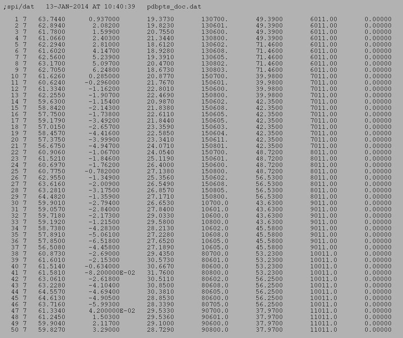

Usage Example - Operation: '
PDB PTS
'
PDB - Put coordinates in SPIDER doc file
Procedure used:
pdbpts.spi
.OPERATION:
PDB PTS
; Put PDB coordinates in SPIDER doc file
.PDB INPUT FILE:
sav_efg_vol.pdb
; PDB file name (input)
.DOCUMENT FILE:
pdbpts_doc
; Coordinate doc file name (output)
PARAMETER DOC FILE
(TRUNCATED)

pdbpts_doc